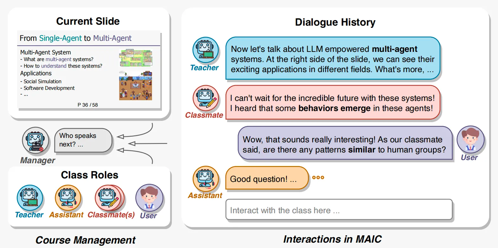
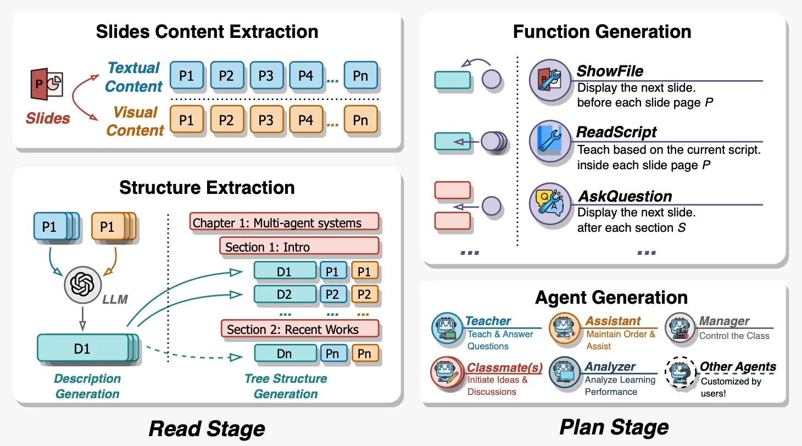
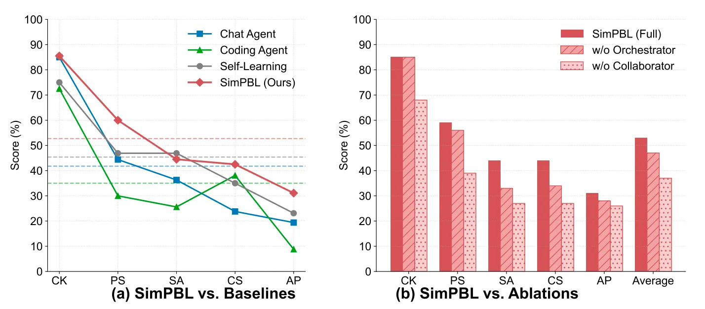
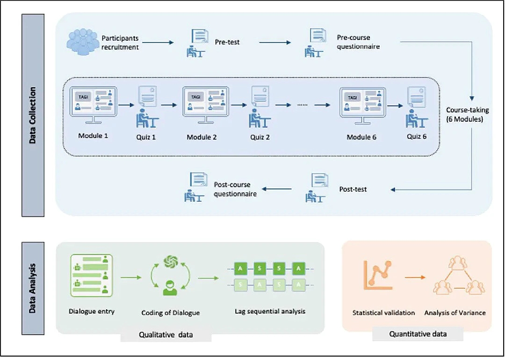
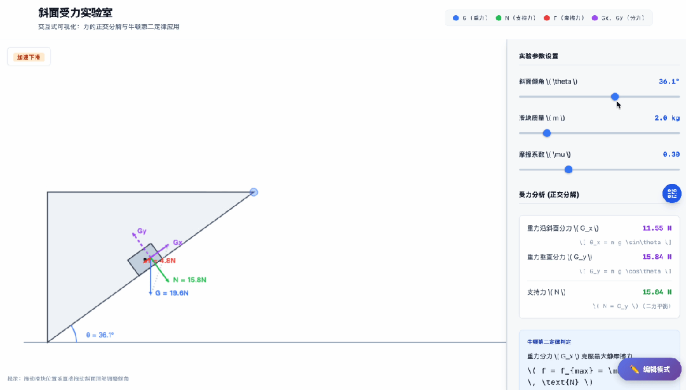

OpenMAIC — Massive AI-empowered Courses
AI in Education · Large Language Models · Multi-Agent Learning
OpenMAIC is an AI-powered learning environment designed to support the creation and delivery of large-scale, interactive learning experiences. The system integrates large language models, multi-agent interaction, multimodal content generation, assessment, and personalized learning into a unified educational environment.
Rather than using an LLM only as a conversational assistant, the project explores how AI can participate in different parts of the learning process, including course generation, instructional interaction, assessment, feedback, discussion, and learning support.
Key Features
- Two-stage AI course generation for structuring and producing learning materials.
- Multi-agent interaction that enables different AI agents to participate in teaching, discussion, questioning, and collaborative learning activities.
- AI teachers with natural voice narration, visual aids, spotlight effects, and pointer animations for more presentation-oriented instruction.
- Automatically generated quizzes, including single-choice, multiple-choice, and short-answer questions aligned with learning objectives.
- AI-supported grading and feedback that identifies potential knowledge gaps and supports personalized learning paths.
- Interactive HTML learning activities, including simulations, algorithm visualizations, flowcharts, and other dynamic educational content.
- Project-based learning environments in which learners can work with AI agents through defined roles, milestones, and deliverables.
- Collaborative learning tools such as whiteboards for equations, diagrams, formulas, and flowcharts.
- Voice interaction through text-to-speech and automatic speech recognition.
- Multi-agent orchestration using a LangGraph-based state management approach.
Technologies
Large Language Models · Multi-Agent Systems · LangGraph · RAG · Text-to-Speech · Automatic Speech Recognition · Interactive HTML · AI Assessment
Project Media




